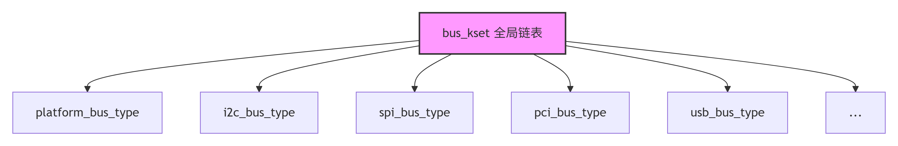

Linux BSP 面试题总结（进阶篇）
一、设备树（Device Tree）
1. 设备树概述
设备树（Device Tree）是一种描述硬件拓扑的数据结构，将板级硬件信息从内核源码中分离。以 .dts（源）→ .dtb（二进制）的形式，在启动时由 Bootloader 传给内核。
核心概念：
| 概念 | 说明 | 示例 |
|---|---|---|
| 节点（Node） | 描述一个硬件设备或总线 | i2c@feb00000 { ... } |
| 属性（Property） | 键值对 | compatible = "sony,imx415" |
| compatible | 驱动与设备匹配的核心字段，格式 "厂商,型号" |
"rockchip,rk3588-uart" |
| status | "okay" 使能，"disabled" 禁用 |
status = "okay"; |
为什么 ARM 需要设备树？ ARM 生态中硬件变化频繁（同一 SoC 不同板子外设不同），不像 x86 有 ACPI/BIOS 统一枚举。设备树让同一份内核镜像适配不同板子，避免硬编码。
追问： .dts 和 .dtsi 的区别？#include 在设备树中的作用？
| 文件 | 用途 |
|---|---|
.dts |
具体板子的设备树源文件，定义该板子的外设配置 |
.dtsi |
可被多个 .dts 包含的公共部分（SoC 级定义，如 RK3588 的所有外设基址、中断号） |
#include 是 C 预处理器指令，.dts 通过 #include "rk3588.dtsi" 复用 SoC 公共定义，再覆盖/追加板级差异。编译流程：.dts → 预处理 → dtc 编译 → .dtb。
2. 驱动中如何读取设备树属性
1 | // 获取 GPIO |
追问： 设备树中的 reg 属性，#address-cells 和 #size-cells 的作用？
#address-cells：reg属性中地址部分占几个 32-bit cell（如#address-cells = <2>表示地址用 2 个 u32，即 64 位地址）#size-cells：reg属性中长度部分占几个 32-bit cell（如#size-cells = <1>表示长度用 1 个 u32）reg：由#address-cells和#size-cells共同决定编码，格式为<addr1 addr2 ... size1 size2 ...>- 这两个属性定义在父节点中，描述其子节点的
reg格式
1 | // 父节点定义了 address/size 格式 |
3. OF 匹配表
1 | static const struct of_device_id rk_camera_dt_ids[] = { |
追问： MODULE_DEVICE_TABLE 宏的作用？为什么 sentinel 项必须为空？
MODULE_DEVICE_TABLE(of, rk_camera_dt_ids) 将匹配表导出到模块的 .modinfo 段。depmod 读取后生成 modules.alias，使 hotplug 机制能在设备插入时自动加载对应驱动模块。sentinel 空项 { } 作为数组结束标记——内核遍历匹配表时遇到全零项停止，防止越界。
二、驱动开发专题
4. I2C 驱动
高频！ 笔电 BSP 最常见总线。
1 | static const struct i2c_device_id imx415_id[] = { |
I2C 接口特性：
| 特性 | 详情 |
|---|---|
| 信号线 | SCL（时钟）+ SDA（数据），半双工 |
| 速率 | 标准 100kHz / 快速 400kHz / 高速 3.4MHz |
| 寻址 | 7 位或 10 位地址，主从架构 |
| 特点 | 2 线制，应答机制（ACK/NACK），支持多主 |
| 典型应用 | Sensor 配置、触摸屏、E²PROM、PMIC |
追问： i2c_transfer 和 i2c_master_send 的区别？SMBus 和 I2C 的关系？
| 函数 | 层级 | 特点 |
|---|---|---|
i2c_transfer |
底层 | 一次可发送多个 i2c_msg，支持 combined transaction（如 write+read 合并为一次 START 不产生 STOP） |
i2c_master_send |
封装 | 内部调用 i2c_transfer，简化的单次写操作 |
SMBus vs I2C： SMBus 是 I2C 的子集，增加了超时（25ms）、最低工作频率（10kHz）、电压规范等约束。内核中 i2c_smbus_read_byte_data 等函数专门处理 SMBus 协议，实际仍通过 i2c_transfer 实现。
5. SPI 驱动
框架类似 I2C，核心是 struct spi_driver + spi_message + spi_transfer。
SPI 接口特性：
| 特性 | 详情 |
|---|---|
| 信号线 | SCLK + MOSI + MISO + CS（片选），全双工 |
| 速率 | 10MHz ~ 100MHz，远高于 I2C |
| 通信方式 | 主从架构，每从设备独立 CS 线 |
| 特点 | 全双工，高速，无应答机制，适合大数据量 |
四种工作模式：
| 模式 | CPOL | CPHA | 采样沿 |
|---|---|---|---|
| Mode 0 | 0 | 0 | 上升沿 |
| Mode 1 | 0 | 1 | 下降沿 |
| Mode 2 | 1 | 0 | 下降沿 |
| Mode 3 | 1 | 1 | 上升沿 |
典型应用： Flash（NOR/NAND）、显示屏、指纹模组、ADC/DAC
追问： SPI 和 I2C 各自适合什么场景？为什么 SPI 速度更快？
| 维度 | SPI | I2C |
|---|---|---|
| 适用场景 | 大数据量、高速、全双工（Flash、显示屏、ADC/DAC） | 多设备、2 线制、低速（Sensor、PMIC、EEPROM） |
| 速度差异原因 | 推挽驱动（边沿陡峭）+ 无应答开销 + 时钟可达 100MHz | 开漏+上拉（上升沿靠电阻充电，速度受限）+ 每字节需 ACK + 最高 3.4MHz |
6. UART 驱动
1 | // UART 驱动核心 ops |
UART 接口特性：
| 特性 | 详情 |
|---|---|
| 信号线 | TX + RX，全双工 |
| 速率 | 9600bps ~ 4Mbps（波特率） |
| 通信方式 | 点对点，异步（无时钟线），需约定相同波特率 |
| 帧格式 | 起始位(1) + 数据位(5 |
| 典型应用 | Debug 串口、蓝牙模块、GPS、EC 通信 |
追问： 波特率如何计算？UART 流控制（RTS/CTS）的作用？
波特率由 UART 控制器时钟通过分频产生：BaudRate = PCLK / (16 × DIV)（16 倍过采样模式）或 PCLK / (8 × DIV)（8 倍过采样）。例如 PCLK = 24MHz，目标 115200，则 DIV = 24000000 / (16 × 115200) ≈ 13.02，取整数 13，实际波特率 ≈ 115384（误差 0.16%）。
RTS/CTS 硬件流控： 当接收端 FIFO 快满时拉高 RTS 通知发送端暂停；发送端检测到 CTS 无效则停止发送，防止数据丢失。适合高速大数据量场景。
UART 不定长接收是怎么做的？
UART 是流式传输，没有帧头帧尾界定包长，常用以下方案：
1 | 方案一：空闲中断（Idle Frame Detection）—— 最常用 |
追问： UART 接收溢出（Overrun）怎么处理？DMA 下如何防止 ring buffer 被覆盖？
Overrun 处理：
- 读取状态寄存器清除 OE 标志
- 丢弃当前帧数据，通知上层重新同步
- 根因修复：增大 FIFO 深度（硬件）或缩短中断响应延迟、提高中断优先级
DMA ring buffer 防覆盖：
- 维护读/写指针，确保写指针不追上读指针
- DMA 使用半满/全满中断（half-full / full），在 buffer 半满时就开始处理，留出时间窗口
- 使用 kfifo 或双缓冲机制
7. 总线、设备、驱动的关系与匹配流程

在 Linux 启动早期，platform_bus 是最先注册的总线类型之一，充当所有 SoC 内部集成外设（如 I2C、SPI、UART 控制器）的默认挂载点。当这些控制器在 platform_bus 上完成 probe 后，会注册各自对应的 I2C/SPI 等总线——新总线与 platform_bus 并列并存。
设备驱动匹配过程：
第一步：内核维护两个全局链表
- 设备链表（
devices）：保存所有已注册的device结构体 - 驱动链表（
drivers）：保存所有已注册的driver结构体 driver_register()和device_register()分别将新注册的驱动/设备加入对应链表
第二步：注册时主动触发匹配
- 调用
driver_register()时：加入驱动链表 → 遍历设备链表，检查能否绑定到任一未绑定设备 - 调用
device_register()时：加入设备链表 → 遍历驱动链表，检查能否与任一驱动匹配
匹配优先级：of_match_table（设备树）→ acpi_match_table → id_table → name 字符串回退
追问： 为什么 Platform 设备不需要像 I2C 那样有物理总线？driver_register 之后内核如何找到已注册的设备？
Platform 设备是 SoC 内部集成外设，通过内存映射寄存器（MMIO）直接访问，不走物理总线协议，因此只需一条虚拟的 platform_bus 做匹配框架。I2C 设备必须挂在物理 I2C 总线上，通过 I2C 协议寻址。
driver_register() 内部调用 bus_add_driver() → driver_attach() → bus_for_each_dev() 遍历总线上所有已注册设备，对每个设备调用 __driver_attach() → driver_match_device() → bus->match()，匹配成功则调用 driver_probe_device() → really_probe() → drv->probe()。
8. V4L2 框架（Camera 方向必考）
1 | // Sensor 子设备核心结构 |
常见追问：
s_stream(1)和s_stream(0)内部做了什么？- MIPI CSI 的
data-lanes配置如何影响带宽计算？ - Bayer 格式（RGGB/GRBG/BGGB/GBRG）的区别？
v4l2_ctrl_handler处理曝光/增益的流程？media-ctl -l设置 link 的流程？
| 追问 | 答案 |
|---|---|
s_stream(1) |
配置 MIPI DPHY 时序 → 开启 MCLK → 写 sensor 寄存器上电 → 使能 data lane 输出。不同 sensor 寄存器序列不同，需查 datasheet |
s_stream(0) |
停止 data lane → 关闭 MCLK → sensor 进入 standby，降低功耗 |
data-lanes |
指定使用的 MIPI lane 数量和映射。<1 2> 表示用 lane 1 和 2。带宽 = lane数 × mipi_clk × 2 / 8（DDR 双边沿采样），如 2-lane + 800MHz = 400MB/s |
| Bayer 格式 | 四者只是 R/G/B 像素的排列顺序不同，由 sensor 的光学阵列决定。ISP 需要知道 Bayer order 才能正确做 demosaic 插值 |
v4l2_ctrl_handler |
创建 handler → v4l2_ctrl_new_std 注册曝光/增益等 Control → 用户态通过 VIDIOC_S_CTRL ioctl 下发 → 回调 s_ctrl 写 sensor 寄存器 |
media-ctl -l |
创建 pad 间的 link：media-ctl -l '"imx415 1-0010":0 -> "rkisp1":0 [1]'，[1] 表示使能。建立 pipeline 后数据才能从 sensor 流向 ISP |
9. DMA 与 Dma-Buf
| 概念 | 说明 |
|---|---|
| DMA | 设备间直接内存传输，无需 CPU 干预 |
dma_alloc_coherent() |
分配一致性 DMA 缓冲区（无 cache 问题） |
dma_map_single() |
流式 DMA 映射，需处理 cache 一致性 |
| Dma-Buf | 跨设备共享缓冲区（Camera→ISP→Display） |
| Ion / Dma-Buf Heap | Android 系统最常用的内存分配方式 |
DMA 传输中如何解决一致性问题？
必问！ 理解 Cache 一致性的根因。
1 | 问题根源： |
解决方案对比：
| 方案 | 原理 | 开销 | 适用场景 |
|---|---|---|---|
| 一致性 DMA | 分配 uncached 内存，无需 sync | 分配时一次性 | 小 buffer、频繁读写 |
| 流式 DMA | cached 内存 + 传输前后手动 sync | 每次传输都要 sync | 大 buffer、偶尔传输 |
dma_alloc_coherent |
返回 uncached 内存 | 访问略慢 | 描述符、命令环 |
dma_map_single + sync |
map → DMA → unmap | 每次 map/unmap | 大数据块传输 |
一致性 DMA：
1 | dma_addr_t dma_handle; |
流式 DMA 完整流程：
1 | // 方向：CPU 写 -> DMA 读（发送给设备） |
三种 DMA 方向标识：
| 方向 | CPU | DMA | Cache 处理 |
|---|---|---|---|
DMA_TO_DEVICE |
写 | 读 | flush/clean（写回 DDR） |
DMA_FROM_DEVICE |
读 | 写 | invalidate（丢弃 Cache） |
DMA_BIDIRECTIONAL |
读写 | 读写 | flush + invalidate |
追问： dma_alloc_coherent 和 dma_map_single 的使用场景区别？ARM Cache 架构 L1/L2/PoC/PoU 的作用？
| 对比 | dma_alloc_coherent |
dma_map_single |
|---|---|---|
| 内存类型 | uncached / coherent | cached |
| sync 开销 | 无 | 每次传输前后都要 sync |
| CPU 访问性能 | 较低（绕过 cache） | 高（利用 cache） |
| 适用 | 频繁 CPU 读写的描述符、命令环 | 一次性大数据块（图像帧、网络包） |
Cache 架构要点：
- PoU（Point of Unification）：指令和数据 cache 在此点后的硬件保证一致性，
I-cache invalidate的边界 - PoC（Point of Coherency）：所有能访问内存的 master（CPU、DMA、GPU）在此点后的硬件保证一致性，
clean/flush的目标点 - 流程：
dma_map_single(DMA_TO_DEVICE)→ clean dcache to PoC（确保 DMA 读到最新数据）；dma_unmap_single(DMA_FROM_DEVICE)→ invalidate dcache to PoC（确保 CPU 读取最新数据）
10. GPIO 子系统和 Pinctrl
1 | // 传统 GPIO API |
追问： Pinctrl 的作用？pinctrl-0 / pinctrl-names 在设备树中如何配置？
Pinctrl 负责引脚复用（Pin Muxing）和电气属性配置（上下拉、驱动强度、施密特触发等）。设备树中通常这样配置：
1 | &uart2 { |
pinctrl-0 对应 pinctrl-names 中第一个名字（”default”），还可定义 pinctrl-1 对应 “sleep” 状态（休眠时切换引脚功能以省电）。
11. 中断还是轮询？——以 MPU6050 为例
必问！ 考察对实时性、功耗、系统负载的综合权衡。
MPU6050 应该采用中断模式。
1 | 原因分析： |
轮询 vs 中断决策矩阵：
| 维度 | 中断模式 | 轮询模式 |
|---|---|---|
| 数据速率 | 低~中速率 | 极高频率 |
| CPU 负载 | 低（按需唤醒） | 高（持续检查） |
| 延迟 | 低~中 | 极低 |
| 功耗 | 低 | 高 |
| 实现复杂度 | 中 | 低 |
| 典型设备 | Sensor、网卡、I2C/Touch | DPDK/SPDK、NVMe |
什么情况下用轮询？
- 数据速率极高（每秒百万次），中断开销 > 轮询开销（如 NVMe、高性能网卡）
- 硬实时系统，轮询延迟更可控（如 DPDK 网络数据面）
- 寄存器状态改变可预测
1 | // MPU6050 中断驱动示例 |
追问： 如果数据速率非常高（如 10KHz），中断还是最优方案吗？NAPI 混合模式怎么工作？
10KHz 下中断仍可行（每 100μs 一次），但开销显著：每次中断有 context save/restore + 中断处理 ≈ 几 μs，累计占用 10%~30% CPU。更高频率（如 100KHz+）则中断开销超过轮询。
NAPI 混合模式（Linux 网络栈核心思想）：
- 首批数据用中断通知 CPU
- 中断处理中关闭该中断，改用软中断 + 轮询批量收包（
net_rx_action→napi_poll） - 用完预算（budget）或无更多数据后，重新开启中断
- 低负载时中断驱动延迟低，高负载时轮询吞吐高——自适应切换
12. Regulator 框架（电源管理）
笔电 BSP 重点！ 瑞芯微/展锐也很看重。
1 | // 设备树中定义 regulator |
追问： Regulator 的电压/电流约束在哪里配置？regulator-always-on 和 regulator-boot-on 的区别？
电压/电流约束在设备树 regulator 节点中配置（regulator-min-microvolt / regulator-max-microvolt / regulator-min-microamp / regulator-max-microamp），也可由 PMIC 驱动在 constraints 结构体中设定。
| 属性 | 行为 |
|---|---|
regulator-always-on |
不可被关闭（即使无人引用），用于系统核心电源（VDD_CPU、VDD_LOGIC） |
regulator-boot-on |
启动时保持开启（bootloader 已开），但当最后一个 consumer 释放后系统可关闭 |
两者常一起出现：regulator-always-on; regulator-boot-on; 表示”启动时已开，且永远不要关”。
三、系统启动与调试
13. 内核启动流程
1 | BootROM → Bootloader(U-Boot) → Kernel → init → 用户空间 |
关键 initcall 级别： early_initcall → pure_initcall → core_initcall → postcore_initcall → arch_initcall → subsys_initcall → fs_initcall → device_initcall → late_initcall。module_init() 默认映射到 device_initcall 级别。
追问： bootargs 中 root=/dev/mmcblk0p2 的含义？rootwait 参数的作用？
root=/dev/mmcblk0p2：根文件系统位于第 0 个 MMC 设备的第 2 个分区（mmcblk = MMC Block 设备，p2 = partition 2）。
rootwait：内核在挂载根文件系统前无限等待设备节点出现。eMMC/SD 卡初始化需要一定时间，不加此参数可能设备尚未就绪就尝试挂载，导致 kernel panic。
14. 如何给内核传参
五种方式：
1 | 方式一：U-Boot bootargs（最常用） |
常见 bootargs 汇总：
| 参数 | 说明 |
|---|---|
console=ttyS0,115200 |
内核日志输出串口 |
root=/dev/mmcblk0p2 |
根文件系统设备 |
rootwait |
等待 root 设备就绪再挂载 |
rw / ro |
根文件系统读写/只读 |
init=/sbin/init |
指定 init 进程路径 |
earlyprintk |
早期启动 printk 输出 |
quiet |
精简启动日志 |
debug |
打印详细调试日志 |
single |
单用户（维护）模式 |
initcall_debug |
打印各驱动 initcall 耗时 |
追问： console=ttyS0,115200 和 earlycon 的区别？ignore_loglevel 的作用？
| 参数 | 生效时间 | 原理 |
|---|---|---|
console=ttyS0,115200 |
串口驱动 console_initcall 注册后（较晚） |
通过 register_console() 加入 console 链表 |
earlycon |
内核极早期（early_param 解析后立即生效） |
使用简单的 early_serial_putc() 直接操作 UART 寄存器输出，无需完整驱动 |
ignore_loglevel：忽略 console_loglevel 限制，打印所有级别的 printk（包括 KERN_DEBUG），常用于调试阶段看到所有日志。
15. 常用调试手段
1 | # 内核日志 |
16. printk 调试技巧
1 | printk(KERN_EMERG "xxx\n"); // 0, 紧急 |
追问： /proc/sys/kernel/printk 四个数字的含义？
| 位置 | 名称 | 含义 | 典型值 |
|---|---|---|---|
| 第 1 个 | console_loglevel |
控制台当前日志级别，高于此级别的才打印到控制台 | 7 |
| 第 2 个 | default_message_loglevel |
未指定级别的 printk() 默认使用的级别 |
4 |
| 第 3 个 | minimum_console_loglevel |
console_loglevel 可设置的最小值（保护下限） |
1 |
| 第 4 个 | default_console_loglevel |
启动时 console_loglevel 的默认值 |
7 |
常用操作：echo "8 4 1 7" > /proc/sys/kernel/printk → 显示所有级别日志。
四、电源管理（PM）
17. 休眠与唤醒
1 | // 设备树中引用 power-domains |
追问： 系统休眠（Suspend-to-RAM）和运行时 PM（Runtime PM）的区别？auto_suspend 的机制？
| 维度 | Suspend-to-RAM (S3) | Runtime PM |
|---|---|---|
| 触发方式 | 用户主动（echo mem > /sys/power/state） |
设备空闲超时后自动触发 |
| 范围 | 全系统：所有设备→所有 CPU→最后关 DDR 自刷新 | 单个设备：仅该设备进入低功耗 |
| 唤醒源 | 电源键、RTC、Wake-on-LAN 等 | 设备自身中断或上层调用 pm_runtime_get() |
| recovery 开销 | 大（恢复 DDR、重新初始化设备） | 小（恢复单个设备状态） |
auto_suspend：驱动调用 pm_runtime_use_autosuspend() + pm_runtime_set_autosuspend_delay(dev, 200) 后，设备在最后一次使用后延迟 200ms 自动触发 runtime_suspend。避免频繁 suspend/resume 的抖动开销。
18. CPUFreq / Devfreq
| 概念 | 说明 |
|---|---|
| CPUFreq | CPU 动态调频调压，governor：performance / powersave / ondemand / interactive |
| Devfreq | 设备频率调节，用于 GPU/DDR 等外设 |
| 笔电场景 | 电源策略直接影响续航和散热 |
追问： cpufreq-info 查看哪些信息？如何绑定特定 governor？
cpufreq-info 输出：当前 governor、可用 governor 列表、当前频率、支持的最大/最小频率、可用频率表、每个 CPU 的统计信息。
绑定 governor（运行时）：echo "performance" > /sys/devices/system/cpu/cpu0/cpufreq/scaling_governor。永久绑定需在 defconfig 中配置 CONFIG_CPU_FREQ_DEFAULT_GOV_PERFORMANCE=y。
五、RTOS 与 Bootloader
19. U-Boot
1 | # 常用命令 |
追问： FIT Image 格式？U-Boot 如何实现设备树 Overlay？
FIT Image（Flattened Image Tree）： 一种包含多个组件的组合镜像格式（.its 源文件 → .itb 二进制），可打包多个内核、设备树、ramdisk 等。相比传统 zImage + dtb 分离加载，FIT Image 支持签名校验、多配置（同一镜像适配多板子）。
1 | // .its 简例 |
设备树 Overlay： U-Boot 加载 base dtb 后，通过 fdt apply 命令合并 .dtbo 覆盖层。常用于运行时动态添加设备节点（如扩展板、HAT 模块），无需修改基础 dtb。内核 4.4+ 也内置了 CONFIG_OF_OVERLAY 支持运行时 overlay。
六、企业特色题
瑞芯微（Rockchip）常问
- RK 平台启动流程：BootROM → U-Boot TPL/SPL → U-Boot proper → Kernel
- RK 的 TRM（Technical Reference Manual） 如何阅读？常见寄存器地址怎么看？
- RK3588 的 NPU 和 VPU 驱动框架了解吗？
- MIPI DPHY 的配置：CLK 和 DATA Lane 的 skew 校准
- RK 的 Camera 管线：VIPP → ISP → VICAP → MPP 的整体流程
- 是否有 RGA（Raster Graphics Acceleration） 驱动经验？
- 是否接触过 RK 的 MPP（Media Process Platform） 多媒体框架？
紫光展锐（Unisoc）常问
- 展锐平台使用什么 bootloader？（通常是 U-Boot 或展锐自研 boot）
- 展锐的 TrustZone 方案，TEE 侧如何与外设交互？
- Modem 和 AP 侧通信（SHM/IPC）的机制了解吗？
- 展锐平台的 Camera 驱动：sprd_sensor / sprd_isp 框架
- 是否有 展锐平台功耗调优 经验？（Modem 待机、AP 休眠）
- 展锐的 DVFS（动态电压频率调整） 机制的实现？
高通（Qualcomm）常问
- 高通平台启动流程：PBL → SBL → TZ → ABL → UEFI → Kernel，和普通 ARM Linux 有什么区别？
- QMI（Qualcomm Message Interface） 机制，AP 和 Modem 如何通信？
- 高通平台 Camera 驱动：CAMSS 框架，了解吗？
- 高通平台电源管理：RPM（Resource Power Manager）和 APR（Audio Power Manager）
- 高通平台的内存分区：CDT、PBL、SBL、TZ、HLOS 分区的作用
- TrustZone / QSEE：高通安全世界的架构？
- 是否接触过 FastRPC（远程过程调用，用于 ADSP/CDSP 通信）？
- 高通平台 Debug 工具：QXDM、QPST、Trace32 等？
七、项目经验深挖
20. 常见的项目追问（针对你的 ODM 笔电背景）
1. 你做过哪些具体外设的驱动移植？
- Camera（MIPI CSI / USB Camera）
- Touchpad（I2C HID）
- Keyboard（PS/2 或 HID）
- 指纹模组（SPI / USB）
- 传感器（Accel/Gyro，I2C）
- 音频（ALSA / I2S）
- 充电/电池（Power Supply Class）
2. 遇到过哪些棘手的 Bug？
- 驱动 probe 失败（I2C 不通、GPIO 冲突）
- 中断风暴（未正确清除中断标志）
- 内存泄漏（kmalloc 后未 free）
- 休眠唤醒异常（PM 回调未实现）
- 图像花屏/抖动（MIPI 时序问题）
3. 如何调试一个 Camera 不亮的问题？
- 检查电源（regulator 是否 enable）
- 检查时钟（MCLK 频率是否正确）
- 检查 I2C 通信（i2cdetect 能否看到设备）
- 检查 MIPI 信号（示波器/逻辑分析仪）
- 检查驱动 probe 是否成功（dmesg）
- 检查 media-ctl 管线是否配置正确
4. 笔电 BSP 中哪些模块让你印象深刻？
- EC（Embedded Controller）通信
- 热管理（Thermal Throttling）
- ACPI 和 DSDT/SSDT 表
- S0ix / S3 休眠状态